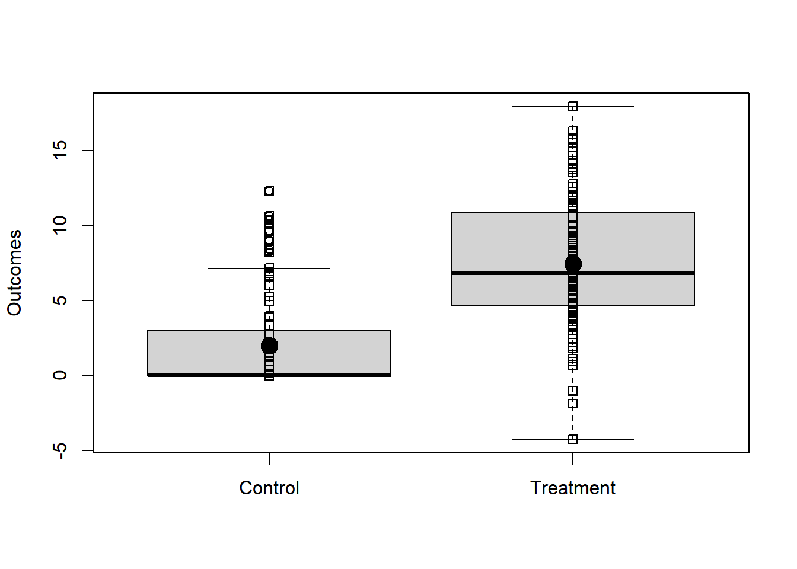

Chapter 3 Design-Based Principles of Statistical Inference
Most policy evaluations using administrative data or surveys report the results of their studies using estimators and tests. Although we can never know the true causal effect of a new policy on our beneficiaries, we can provide a best guess (“The average amount saved for retirement by people in the treatment group was $1000 more than the average amount in the control group: our estimate of the average treatment effect is $1000.”) and we can provide a test of a hunch or hypothesis (“We can reject the null hypothesis at the 5% significance level with \(p=.02\).”). Confidence intervals, by the way, summarize hypothesis tests, so we think of them as tests rather than estimators.
Now, when we are asked why we used this or that method for calculating an average treatment effect or a \(p\)-value or a confidence interval, our team has tended to say that our statistical analyses depend on the design of our studies. When applied to randomized experiments, this principle can be written simply as: analyze as you randomize. We provide an example of this principle in practice below. This idea, often known as “randomization based” or “design based” inference, was proposed by two of the founders of modern statistics. Jerzy Neyman’s 1923 paper showed how to use randomization to learn about what we would currently call “average treatment effects” (Neyman (1923)) and Ronald A. Fisher’s 1935 book showed how to use randomization to test hypotheses about what we would currently call “treatment effects” (Fisher (1935)). We mention this commitment here because it guides our choices of statistical tools in general.
We use a design based approach because we often know how a study was designed — after all, we and our agency collaborators tend to be the ones deciding on the sample size, the experimental arms, and the outcome data to be extracted from administrative databases. There are other ways to justify statistical procedures, and we do not exclude any reasonable approach in our work — such as approaches based on theoretical probability models. However, referring to what we know we did in a given study has served us well so far, and it thus forms the basis of our decisions in general.
3.1 An example using simulated data
Imagine we have a simple randomized experiment where the relationship between outcomes and treatment is shown in Figure ??. Notice that, in this simulated experiment, the treatment changes the variability in the outcome in the treated group — this is a common pattern when the control group is status quo.
## y0 and y1 are the true underlying potential outcomes.
with(dat1,{boxplot(list(y0,y1),names=c("Control","Treatment"),ylab="Outcomes")
stripchart(list(y0,y1),add=TRUE,vertical=TRUE)
stripchart(list(mean(y0),mean(y1)),add=TRUE,vertical=TRUE,pch=19,cex=2)})
In this simulated data, we know the true average treatment effect (ATE) because
we know both of the underlying true potential outcomes (written in code as y0
for \(y_{i,Z_i=0}\) or “the response person \(i\) would provide if he/she were in
the status quo or control group” and y1 for \(y_{i,Z_i = 1}\) for “the
response person \(i\) would provide if he/she were in the new policy or treatment
group”. We use \(Z_i\) to refer to the experimental arm. In this case \(Z_i=0\) for
people in the status quo and \(Z_i=1\) for people in the new policy. (You can click to SHOW the code.)
[1] 5.453Now, we have one experiment (defined by randomly assigning half of the people to treatment and half to control). We know that the observed difference of means of the outcome, \(Y\), between treated and control groups is an unbiased estimator of the true ATE. And we can calculate this number in a few ways: Notice that we can just calculate the difference of means or we can use the fact that the ordinary least squares linear model also calculates the same number if we have a binary treatment on the right hand side.
## Y is the observed outcome.
estATE1 <- with(dat1, mean(Y[Z==1]) - mean(Y[Z==0]))
estATE2 <- lm(Y~Z,data=dat1)$coef[["Z"]]
c(estimatedATEv1=estATE1,estimatedATEv2=estATE2)estimatedATEv1 estimatedATEv2
4.637 4.637 The design-based perspective causes differences in our approach when we think about how to calculate standard errors (and thus \(p\)-values and confidence intervals).
3.1.1 How do we calculate randomization-based standard errors?
How would an estimate of the average treatment effect vary if we repeated the experiment on the same group of people? The standard error of an estimate of the average treatment effect is one answer to this question. Below, we simulate a simple, individual-level experiment to develop intuition about what a standard error is.2
simEstAte <- function(Z,y1,y0){
## A function to re-assign treatment and recalculate the difference of means
## Treatment was assigned without blocking or other structure, so we
## just permute or shuffle the existing treatment assignment vector
Znew <- sample(Z)
Y <- Znew * y1 + (1-Znew) * y0
estate <- mean(Y[Znew == 1]) - mean(Y[Znew == 0])
return(estate)
}sims <- 10000
set.seed(12345)
simpleResults <- with(dat1, replicate(sims, simEstAte(Z = Z, y1 = y1, y0 = y0)))
## The standard error of the estimate of the ATE.
seEstATEsim <- sd(simpleResults)
seEstATEsim[1] 0.9256Although this preceding standard error is intuitive (it is merely the standard deviation of the distribution arising from repeating the experiment), more statistics-savvy readers will recognize closed-form expressions for the standard error like the following (See Gerber and Green (2012) and Dunning (2012) for easy to read explanations and derivations of the design-based standard error of the simple estimator of the average treatment effect.) If we write \(T\) as the set of all \(m\) treated units and \(C\) as the set of all \(n-m\) non-treated units, we might write
\[\begin{equation} \widehat{Var}(\hat{T}) = s^2(Y_{i,i \in T})/m + s^2(Y_{i,i \in C})/(n-m) \end{equation}\]
where \(s^2(x)\) is the sample variance such that \(s^2(x) = (1/(n-1))\sum^n_{i = 1}(x_i-\bar{x})^2\). Here we compare the results of the simulation to this most common standard error as well as to the true version: We know what the true variance of the estimated ATE would be because we know the algebra of variances and covariances and because, in this example, we know the actual underlying counterfactual outcomes. We show this here to show that “standard deviation of the estimated ATE after repeating the experiment” is the same as what textbooks teach.
## True SE (Dunning Chap 6, Gerber and Green Chap 3 and Freedman, Pisani and Purves A-32)
## including the covariance between the potential outcomes
N <- nrow(dat1)
V <- var(cbind(dat1$y0,dat1$y1))
varc <- V[1,1]
vart <- V[2,2]
covtc <- V[1,2]
nt <- sum(dat1$Z)
nc <- N-nt
varestATE <- ((N-nt)/(N-1)) * (vart/(N-nt)) + ((N-nc)/(N-1)) * (varc/nc) + (2/(N-1)) * covtc
seEstATETrue <- sqrt(varestATE)And the finite sample feasible version (where we do not observe all the potential outcomes) and so we do not have the covariance. This is what we calculate — notice that it is not what OLS calculates.
varYc <- with(dat1,var(Y[Z == 0]))
varYt <- with(dat1,var(Y[Z == 1]))
fvarestATE <- (N/(N-1)) * ( (varYt/nt) + (varYc/nc) )
estSEEstATE <- sqrt(fvarestATE)Here we use the HC2 standard error — which (Lin (2013)) shows is the randomization-justified SE for OLS. Following our design-based approach, we use this standard error. And below we compare the true standard error, the feasible standard error, the HC2 SE (which is the same as the feasible standard error), the standard error arising from direct repetition of the experiment, and the OLS standard error.
lm1 <- lm(Y~Z,data=dat1)
## The OLS SE
iidSE <- sqrt(diag(vcov(lm1)))[["Z"]]
## Worth noting that if we had covariates in the model we would want this one
## (which is identical to the previous one without covariates).
NeymanSE <- sqrt(diag(vcovHC(lm1,type = "HC2")))[["Z"]]
compareSEs <- c(simSE = seEstATEsim,
feasibleSE = estSEEstATE,
trueSE = seEstATETrue,
olsIIDSE = iidSE,
NeymanDesignSE = NeymanSE)
sort(compareSEs) trueSE olsIIDSE simSE NeymanDesignSE feasibleSE
0.6760 0.8930 0.9256 1.0387 1.0439 The Neyman SE is supposed to be conservative relative to the true SE. Below, we show this to be the case. In this particular case, the SE of the OLS estimator is larger than both of the other SEs — recall that our design involves different variance between the outcomes in the treated group and the control group — so we expect that what we are calling the “iid” SE should be biased but not necessarily guaranteed to be overly conservative or liberal in all cases.
sePerfFn <- function(Z,y1,y0){
Znew <- sample(Z)
Ynew <- Znew * y1 + (1-Znew) * y0
lm1 <- lm(Ynew~Znew)
iidSE <- sqrt(diag(vcov(lm1)))[["Znew"]]
NeymanSE <- sqrt(diag(vcovHC(lm1,type = "HC2")))[["Znew"]]
return(c(estATE=coef(lm1)[["Znew"]],
estSEiid=iidSE,
estSENeyman=NeymanSE))
}set.seed(12345)
sePerformance <- with(dat1, replicate(sims, sePerfFn(Z = Z, y1 = y1, y0 = y0)))
apply(sePerformance[c("estSEiid", "estSENeyman"), ], 1, summary) estSEiid estSENeyman
Min. 0.7004 0.6373
1st Qu. 0.8301 0.8949
Median 0.8511 0.9579
Mean 0.8511 0.9574
3rd Qu. 0.8720 1.0205
Max. 0.9600 1.2640ExpectedSEs <- apply(sePerformance[c("estSEiid", "estSENeyman"), ], 1, mean)
c(ExpectedSEs, trueSE = seEstATETrue, simSE = sd(sePerformance["estATE", ])) estSEiid estSENeyman trueSE simSE
0.8511 0.9574 0.6760 0.9256 When we have a two arm trial, we can estimate the ATE and calculate design-based standard errors and use them to create large-sample justified confidence intervals in relatively large experiments using either of the following approaches:
## the difference_in_means function comes from the estimatr package
estAndSE1 <- difference_in_means(Y ~ Z, data = dat1)
## coeftest and coefci come from the lmtest package
est2 <- lm(Y ~ Z, data = dat1)
estAndSE2 <- coeftest(est2, vcov.=vcovHC(est2, type = "HC2"))
estAndCI2<- coefci(est2, vcov.=vcovHC(est2, type = "HC2"), parm = "Z")
estAndSE1Design: Standard
Estimate Std. Error t value Pr(>|t|) CI Lower CI Upper DF
Z 4.637 1.039 4.465 8.792e-05 2.524 6.75 33.12 Estimate Std. Error t value Pr(>|t|)
Z 4.637 1.039 4.465 2.147e-05 2.5 % 97.5 %
Z 2.576 6.6993.2 Summary: What does a design based approach mean for policy evaluation?
Hypothesis tests produce \(p\)-values telling us how much information we have against null hypotheses. Estimators produce estimates — guesses about some causal effect like the average treatment effect. Standard errors summarize how our estimates might vary from experiment to experiment. Confidence intervals tell us which ranges of null hypotheses are more versus less consistent with our data.
Recall that \(p\)-values and standard errors refer to probability distributions of test statistics under a null hypothesis and the distributions of estimators across repeated experiments, respectively. In the frequentist approach to probability, these probability distributions arise from some process of repetition. Statistics textbooks often encourage us to imagine that this process of repetition involves repeated sampling from a population, or even a hypothetical super-population. But, most of the work of the OES involves a pool of people who are not a well-definied population, nor do we tend to have a strong probability model of how these people entered our sample. Instead, we have a known process of random assignment to an experimental intervention. And this makes a randomization-based inference approach natural for our work, and helps our work be easiest to explain and interepret for our policy partners.
References
Neyman, Jerzy. 1923. “On the Application of Probability Theory to Agricultural Experiments: Essay on Principles, Section 9.” Annals of Agricultural Sciences, 101–51 (in Polish).
Fisher, Ronald A. 1935. The Design of Experiments. Edinburgh: Oliver; Boyd.
Gerber, Alan S., and Donald P. Green. 2012. Field Experiments: Design, Analysis, and Interpretation. New York, NY: W. W. Norton & Company.
Dunning, Thad. 2012. Natural Experiments in the Social Sciences: A Design-Based Approach. Strategies for Social Inquiry. New York, NY: Cambridge University Press.
Lin, Winston. 2013. “Agnostic Notes on Regression Adjustments to Experimental Data: Reexamining Freedman’s Critique.” The Annals of Applied Statistics 7 (1): 295–318.
See http://egap.org/methods-guides/10-types-treatment-effect-you-should-know-about for a demonstration that the difference of means in the observed treatment and control groups is an unbiased estimator of the average treatment effect itself and what it means to be unbiased.↩